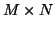

Next:
Quelles sont les principales
Up:
FAQ sur les ondelettes
Previous:
Je veux faire du
Contents
Applications
Subsections
Quelles sont les principales applications des ondelettes?
J'ai bien compris comment faire la transformation par ondelettes sur un signal 1D, comment faire pour transformer une image?
La transformée par ondelettes ne s'applique que pour des matrices de taille
, donc pour des images de
pixels fois
pixels ? Alors comment faire pour des images non carrées et/ou de coté différent d'une puissance de 2 (par exemple 800*600 ou 1024*768) .
Qu'est-ce que le débruitage par ondelettes?
L' algorithme par ondelettes prend une image  et va en faire un tableau de coefficients, où est la compression?
Qu'est-ce que le codage entropique ou codage d'entropie?
L'image couleur résulte de la superposition de 3 matrices (1 codant chaque couleur primaire : rouge vert bleu). Applique-ton l'agorithme pour chaque matrice ?
En compression vidéo, on peut faire mieux que Fourier avec les ondelettes?
Quelle est la différence entre la compression par ondelettes pour la vidéo (MPEG) et pour les images statiques (JPEG2000)?
Où est-ce que je peux trouver les références concernant les formats MPEG?
Daniel Lemire 2004-02-02